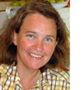

|
|
|
A CONVERSATION WITH DR. HOLLY HARTMANN
Beyond the Acronyms
|

“It's like a Road Runner cartoon; the agencies have to turn around completely while their feet are still moving in a whirr in the other direction.”
|
Q: At least 14 federal departments and agencies have climate change initiatives and many, many subsidiary
entities have their own climate change programs. Where does the western water community turn for needed
information?
HH: NOAA is where the climate work really starts, but other agencies are doing a lot. The field is
evolving quickly and constantly shifting. There are working groups,
pilot programs, informal collaborations. It's hard to get a handle on what's going on.
What you hear a lot is: Wouldn't it be nice if one entity was keeping track of all this? There is an effort at the
federal level, but coordinating inside the Beltway is different from coordinating regionally on specific land and water
management issues.
A big change has come with the Obama Administration. The shift is so strong that some agencies went from not being able
to use "climate" and "change" in the same sentence to a mandate to come up with response strategies and adaptation
plans by the end of this year. It's like a Road Runner cartoon; the agencies have to turn around completely while their
feet are still moving in a whirr in the other direction.
The best place for federal level information that I'm aware of is the Interagency Climate Change Adaptation Task Force
being led by CEQ and OSTP and NOAA. They are tasked to come up with the interagency strategy at the federal level,
setting priorities and coordination and principles. October will be a milestone if you are thinking about when to check
in. That's when their report will come out.
Another big piece is the change in the National Assessment mandated every four years from the USGCRP (formerly CCSP).
In the past years their products were reports which, as a series, have been very helpful. Now they are moving on to the
next step, saying we have to deal with climate science advances and adaptation as an ongoing process involving everyone.
Q: So, in this shifting landscape, the question still stands: where does the Western water community on the
ground go for information?
HH: It depends on where you are, and who you already know and work with. Every one of these federal
agencies is involved at some level with dealing with adaptation and climate change.
If you are used to working with the Regional Integrated Science Assessment Projects, you can keep dealing with them,
though they are changing too. If you are working with USDA, the Forest Service will be able to tell you where to engage
on climate change issues. They now have clearance to address that openly. In every agency there will be someone you can
engage with. There are a lot more players, which is a good thing. It may take a few calls, but someone is coordinating.
You don't need to know to know all of these acronyms to connect with someone helpful.
It's also location dependent. In the Northwest, the Forest Service is pushing the local, on-the-ground coordination. In
the Intermountain region, the National Park Service has a big push for coordination. For the Colorado Basin, the Bureau
of Reclamation now has clearance to coordinate with climate change issues.
You have to remember that things are still so stovepiped that the Forest Service, for example, may not be aware of what
other parts of USDA are doing. If you are working with somebody in a federal agency, push them to figure out where the
coordination is happening.
Finally, you don't need to just connect with the feds. There are a lot of informal, self-organizing groups among water
providers, for example. This reflects that people don't need to be convinced about the need for adaptation any more.
Now we're asking what do to, how to do it, and how to evaluate what's good to do. We've crossed that threshold, and
that's a positive message.
Q: How can the Carpe Diem Project help western water interests get the information they need?
HH: Because the Carpe Diem Project covers the whole West and has this strong network and connections
both with folks on the ground and in the Beltway, it's in a good position to facilitate communication. Things change
quickly, and Carpe Diem is really good at keeping tabs on issues as they emerge. Ideally, as the social media part of
the Project gets set up, it will help keep everyone informed about how things are developing. Nobody else is doing that
across the West.
DR. HOLLY HARTMANN is Director of the Arid Lands Information Center at the University of Arizona. She is a
co-investigator within the Climate Assessment for the Southwest (CLIMAS) and led the scenario development team within
the UA Science and Technology Center for the Sustainability of Semi-Arid Hydrology and Riparian Areas (SAHRA). Holly is
a national leader in research related to the development of decision support tools for climate, water, and other
resource management applications, especially linking research with the needs of decision makers and moving research
into agency operations. Holly received her MS degree in water resources management from the University of Michigan and
her PhD in hydrology and water resources from the University of Arizona. She has been a Carpe Diem Project team member
since 2008.
|
|
|